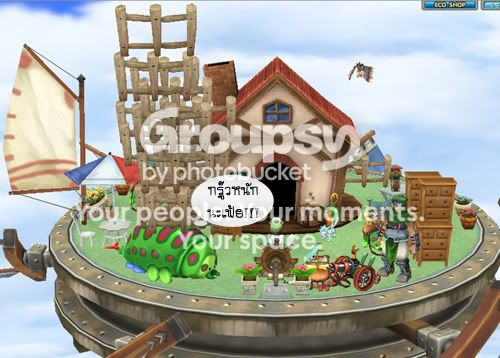
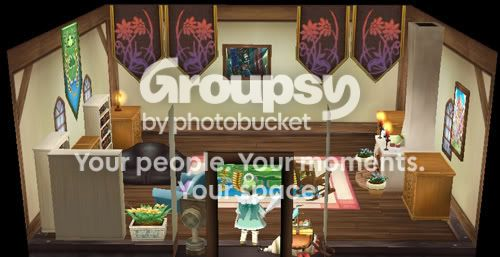

jib001 เขียน:
สิงคนอื่นได้ครับ
ผมเล่นเผ่า อีมิล ขึ้นชั้น 5 ไม่ได้
เลยเอาตัวเผ่า โดมิเนี่ยนของแฟนมายืมสิง อ่ะ
เผ่า emil ก้อขึ้นได้คับ แต่ต้องขึ้นตอนแปลงร่างเป็นมาริโอเนต จะเป็นตัวไหนก้อได้คับ แล้วชั้น 5 ก้อจะขึ้นมาให้เลือกเองงับ
http://eco.froztic.in.th/archive/ecofanclub/
http://eco.froztic.in.th/archive/ecofanclub/viewtopic.php?f=16&t=26538
jib001 เขียน:
สิงคนอื่นได้ครับ
ผมเล่นเผ่า อีมิล ขึ้นชั้น 5 ไม่ได้
เลยเอาตัวเผ่า โดมิเนี่ยนของแฟนมายืมสิง อ่ะ
เป็ดน้อย เขียน:ทำยังไงให้นกมันไปลอยอยู่บนฟ้าอ่ะคับ
MoMoHiMe เขียน:ใช่..เพี้ยนจริงๆ แต่เป็นวิธีการแต่งบ้านนะ เยี่ยมมาก - -


BustTong เขียน:jib001 เขียน:
สิงคนอื่นได้ครับ
ผมเล่นเผ่า อีมิล ขึ้นชั้น 5 ไม่ได้
เลยเอาตัวเผ่า โดมิเนี่ยนของแฟนมายืมสิง อ่ะ
เผ่า emil ก้อขึ้นได้คับ แต่ต้องขึ้นตอนแปลงร่างเป็นมาริโอเนต จะเป็นตัวไหนก้อได้คับ แล้วชั้น 5 ก้อจะขึ้นมาให้เลือกเองงับ

Taezz เขียน:เอ๋อ ตอบทีครับ
ช่วยบอกทีว่า ถ้าผมปลูกเมล็ดข้างแล้วเนี่ย
มันจะสามารถโตได้มั้ยอะงับ
สมมุติ ปลูก Rice ต้นเล็ก
ถ้าทิ้งไว้ มันจะกลายเป็น Rice (Big) มั้ยอะงับ
ครายทราบช้วยอธิบายทีนะงับ ขอบคุณมากๆ
bom038 เขียน:อะไรที่เป็นข้อดีของชาวนาอ่ะ ที่พ่อค้าไม่มี คือ อยากเล่นชาวนาและพ่อค้า หลายคนบอกให้เลือก พ่อค้า แต่อยากเล่นชาวนา ชอบ ชุด 75 อ่ะ นี่ ละ
แล้ว ถ้าตีเมล็ดที่ปลูกเอง จะมี item ตกมามั้ยอะงับ
เมล็ดที่ได้จากฟาร์มลับ ปลูกแล้วจะไม่มีของดรอปนิ?...
No one เขียน:เมล็ดที่ได้จากฟาร์มลับ ปลูกแล้วจะไม่มีของดรอปนิ?...